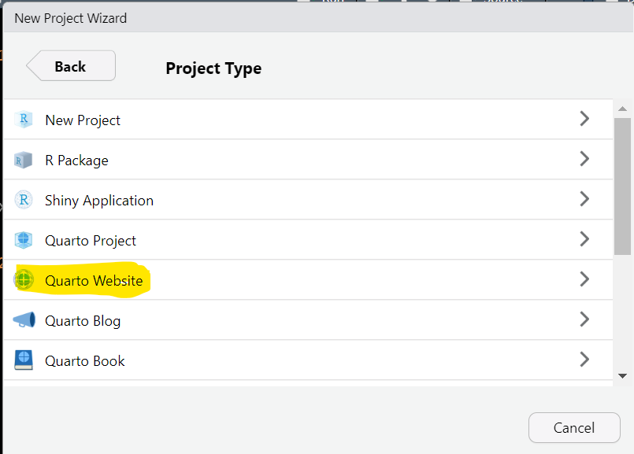
Building your website with Quarto
blog
quarto
A brief story about how I built this website with Quarto
This website is built with Quarto, which is an open-source publishing system. It can be used for making reports, books, presentations, websites etc. I wanted to learn how to use Quarto for making a website, so I decided to make one for myself. In this blog post I’ll go trough some the basics which are needed for creating a simple website.
Before we start
Building a website might seem intimidating. At least that’s how I felt, having never done it before. Luckily, Quarto makes the process quite pleasant. I also ran into a couple of excellent resources that walk you through the process.
If you are interested in setting up your own website, I recommend reading the websites section on the Quarto website as a first step. Additionally, Albert Rapp has written a great tutorial on how to setup a blog with Quarto. As a fellow R user, I found Albert’s instructions very helpful.
What you will need
I used RStudio for creating all the files for my website. The latest version of RStudio includes a built-in version of Quarto. Updating RStudio is most likely the easiest way of installing Quarto. You will also need a GitHub account to setup a repository. If working with git and GitHub is not familiar to you, have a look at Jenny Bryan’s wonderful Happy Git and GitHub for the useR to help you get started.
Setting up a local website
Before launching a website for everyone to see, we first need to build the site locally on our computer. To do this, you need to start a new project in a new directory inside RStudio. Choose Quarto Website as the project type. You can easily add a blog to your website later if you want. I’ll show you in a minute how that is done.
Choose a directory for your project, and tick the box that says “Create a git repository”. You should end up with something like this:
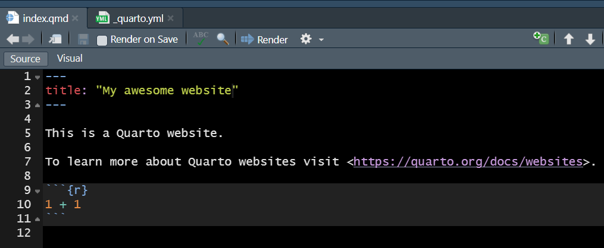
Click on the Render button to see your new website. It should open in a browser window or the RStudio viewer pane. If nothing happens, click on the gear icon next to the Render button and choose Preview in Window. The website should look like this:
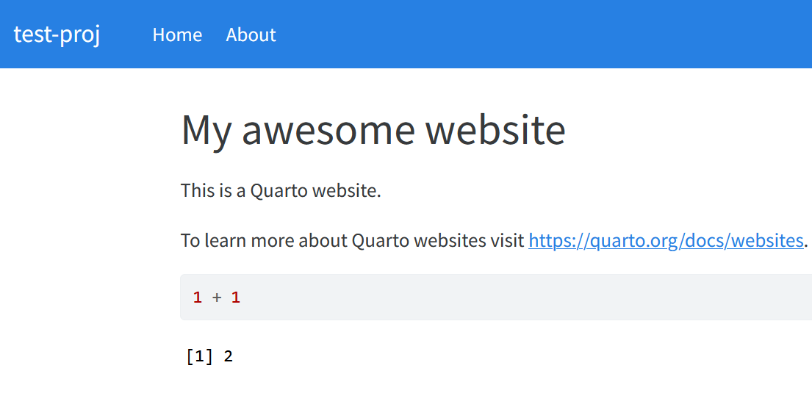
Congratulations, you now have a local website on your computer.
Setting up a GitHub repo
There are several ways to achieve this. If you’re new to working with git and GitHub, then it might be easiest to create an empty repository to GitHub first, and move all the files from your local project there. This was the approach I took. You can find great instructions by Jenny Brian from here.
Briefly:
Log on to https://github.com/
Create a repository with the same name as your local website project in RStudio. Make the repository public, and leave everything else blank for now:
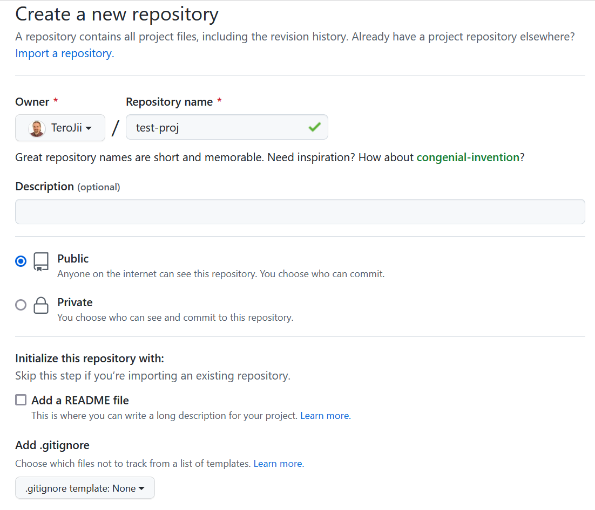
- Copy the repository URL to your clipboard. It should be in the format:
https://github.com/your-username/your-repo-name.git
Connecting your local repo to GitHub
Go to the git pane in RStudio and click the button shown below (circled with red).
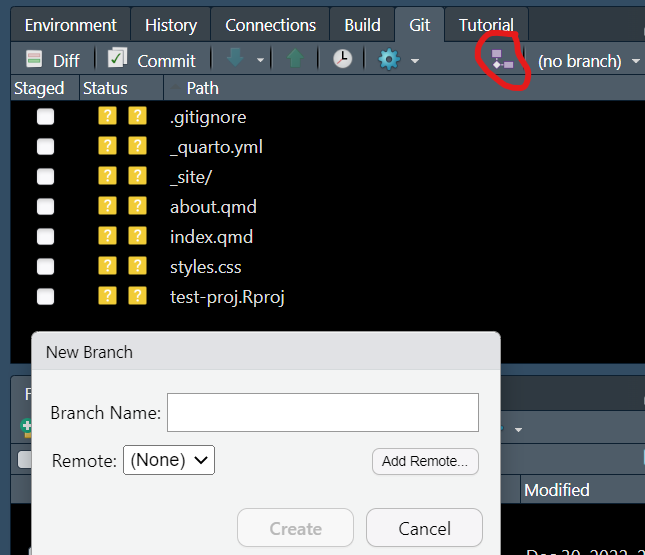
In the New Branch pop-up menu, click Add Remote... and paste your repository URL there. In the Remote Name: field, write “origin”. Now, write “main” in the Branch Name: field, and make sure the Sync Branch with remote tick box is checked before hitting Create.
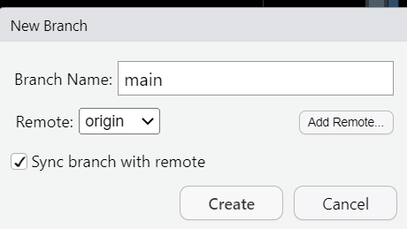
This will throw you a bunch of error messages. Not to worry. This is because we forgot to commit our files.
Committing the files
Go to RStudio git-pane:
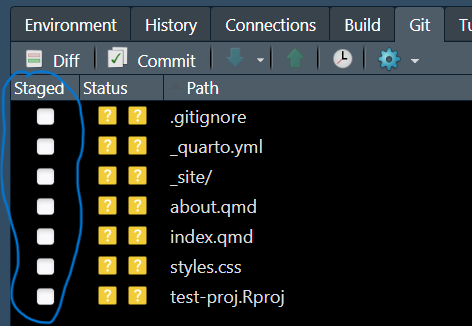
Click of the Staged tick boxes in the git pane and push commit. A pop-up pane will appear. Write a brief commit message and push the Commit button:
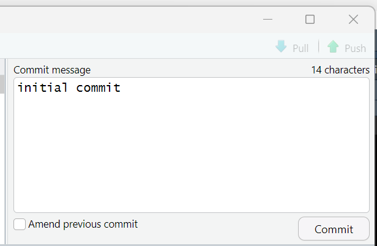
Now let’s try to sync the repos again. Push the button with purple squares again and push Create in the pop-up menu to sync the repos:
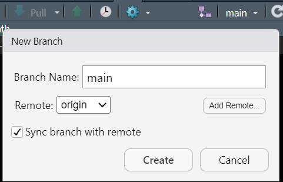
You will get a warning message. Push Overwrite and sync the repos:
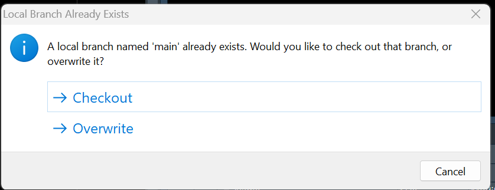
You’re done:
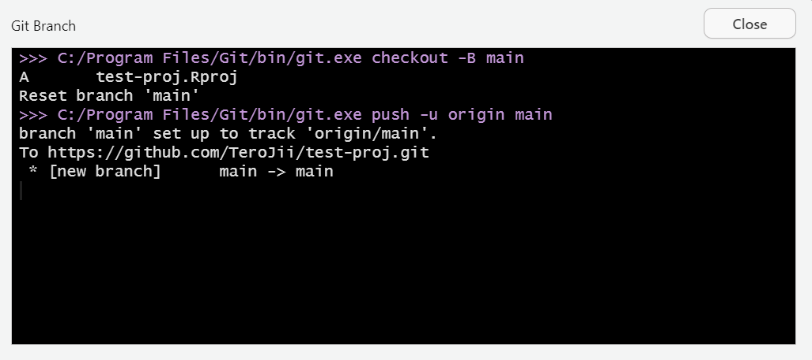
When you now visit your github repo at https://github.com/your-username/your-repo-name, you should find all the files you committed there. From now on, you should be able to update any local changes to your GitHub-repo by committing and pushing from the Git-pane.
Creating content to your website
Let’s add a blog to our website. We can do this by editing the _quarto.yml file:
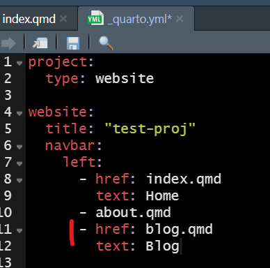
All we need to do is to add two lines of text to the file. The text: field saying “Blog” will create a button to the navbar, and the href: field will tell quarto which file to refer to for blog content. Next, we will create an empty file called blog.qmd, and add the following content to the file:
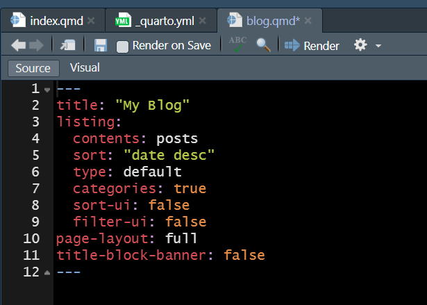
The contents: field in the above file, which states posts, tells quarto to look for blog content inside a folder called posts. Let’s create a folder by that name inside our project root. Your files pane should now look like this:
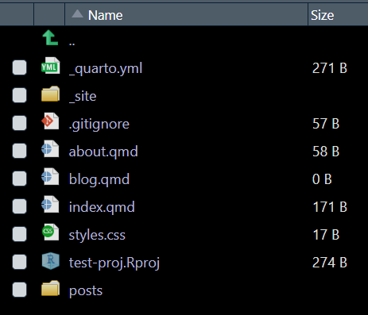
In order to create our first post, let’s add a qmd-file inside the posts folder. The file should look something like this:
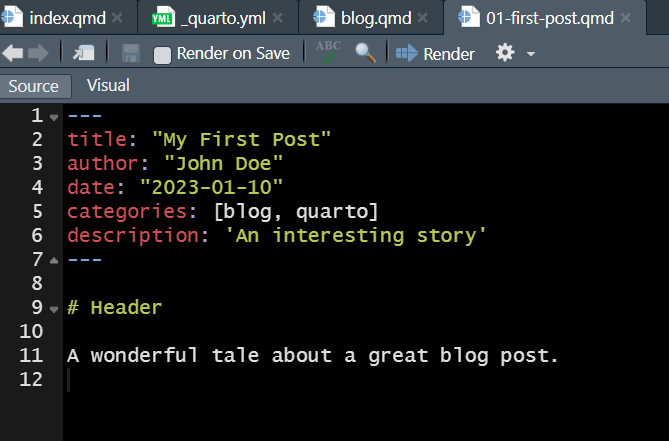
We are now ready to test drive our blog. Save all your files, and then click Render to see your new website:
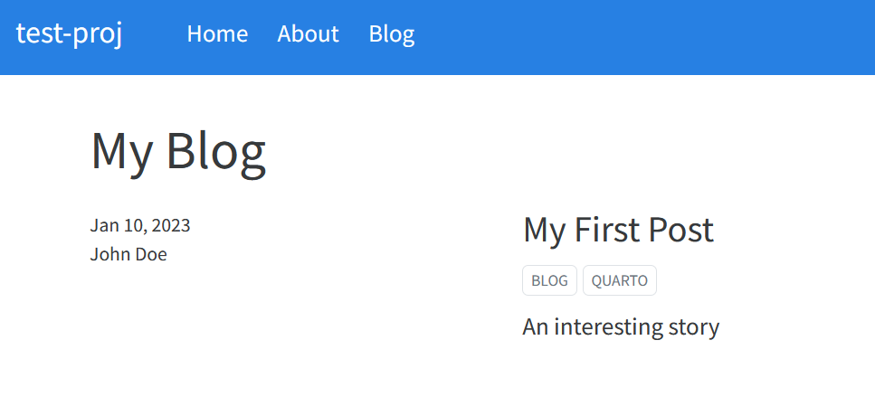
Our blog has appeared to the local website. As a final step let’s commit and push to add our changes to GitHub:
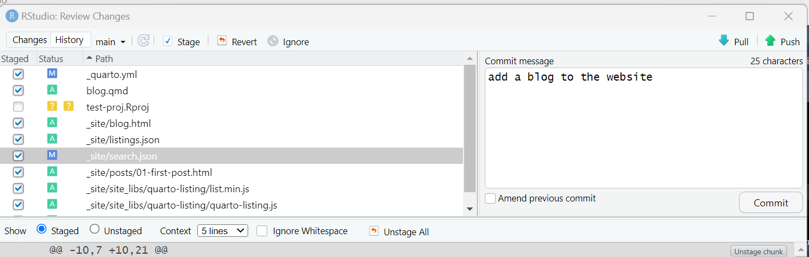
Read Albert’s blog post for more tips on customizing the appearance of your website.
Publishing your website through GitHub Pages
There are many ways to make your website available for others to read. GitHub Pages is a pretty straightforward way to do this. The Quarto documentation has excellent instructions on how to do this, and they also have information on other publishers as well. I recommend following the instructions above. It should be quite easy.
So that’s basically it. Quarto makes it pretty easy to build a website from scratch. Hope you enjoyed reading.